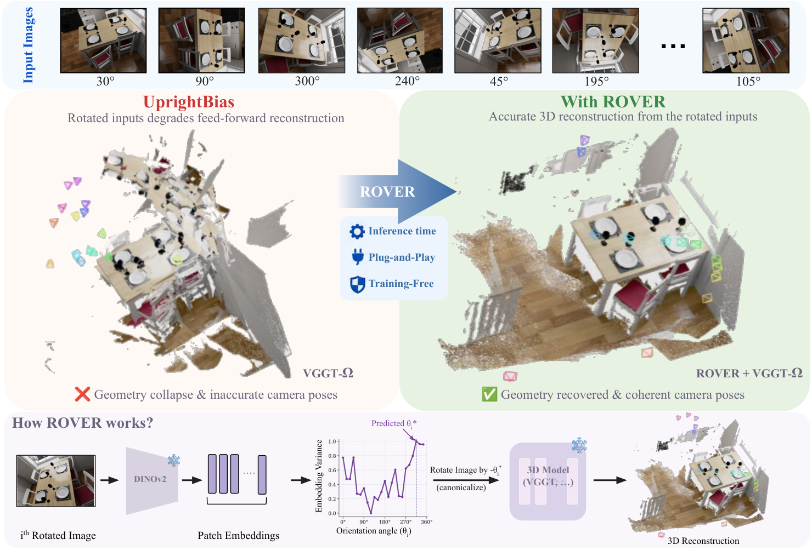
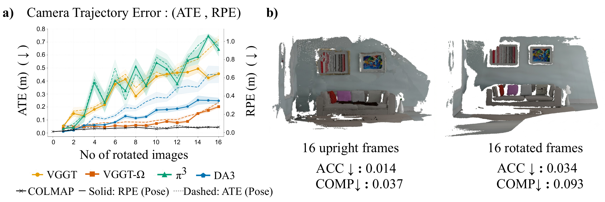
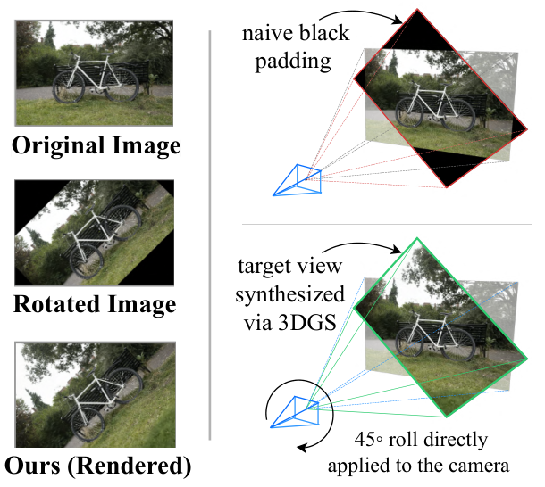
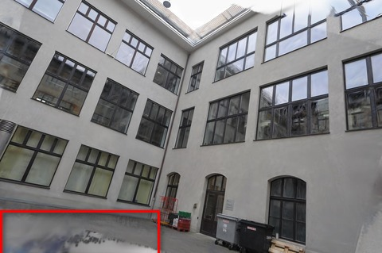
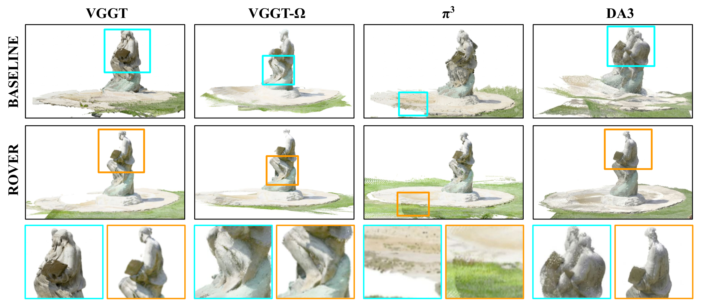
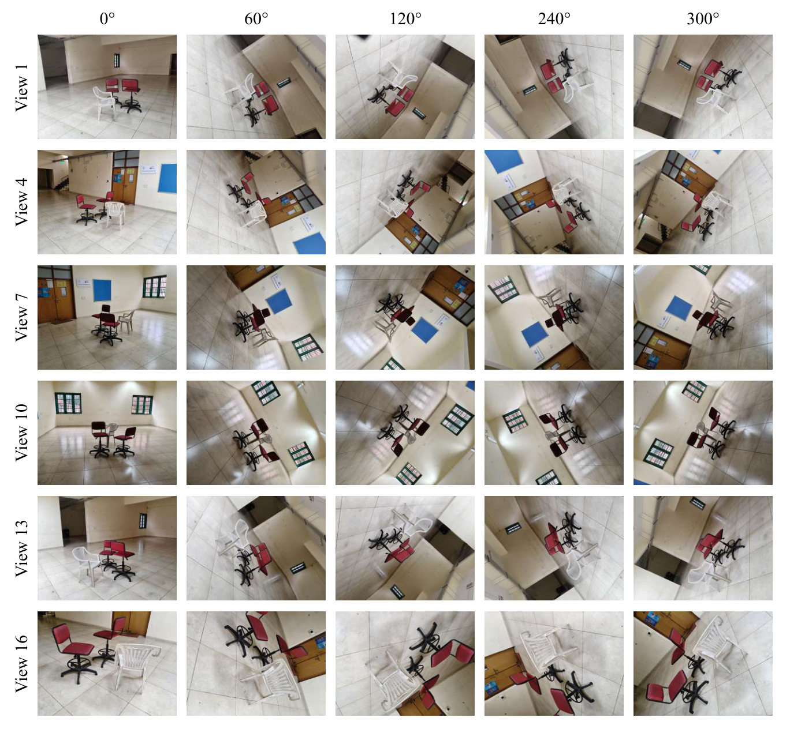
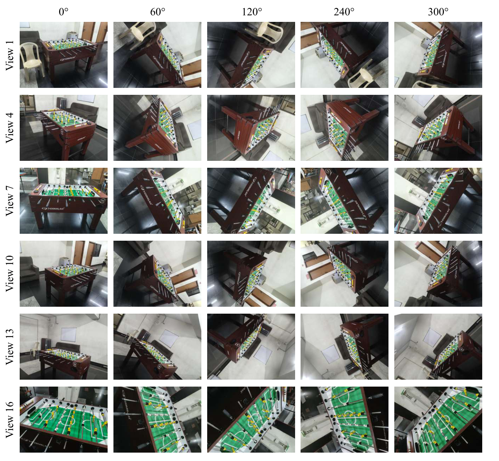
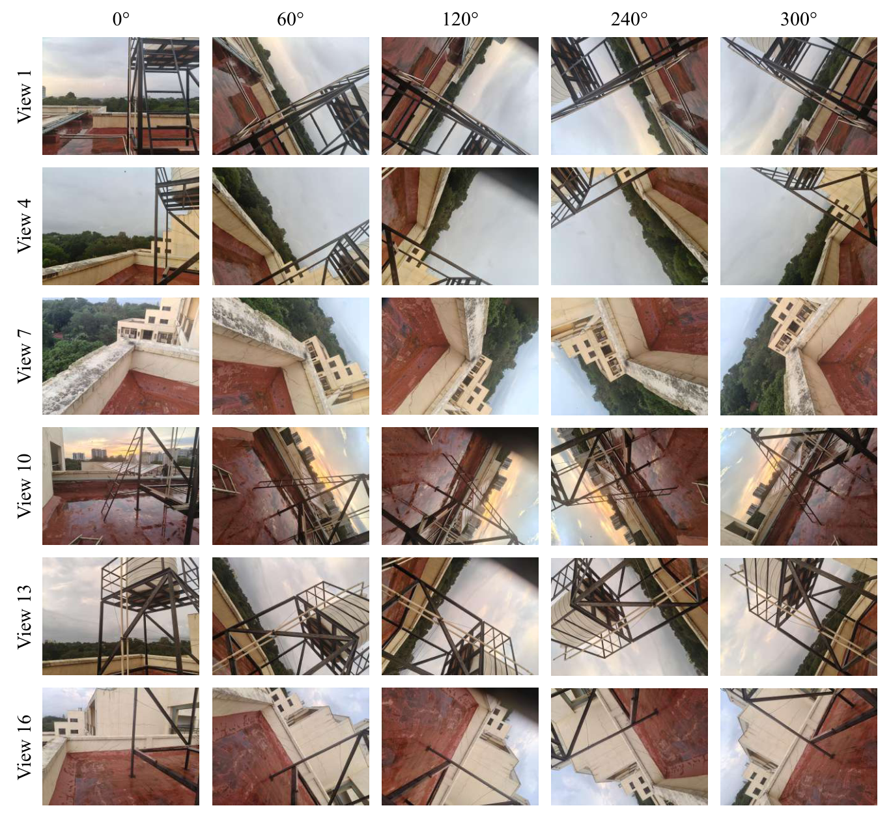

Feed-forward 3D reconstruction
Mind the Orientation:
Overcoming UprightBias in Feed-Forward Geometric Models
1 Indian Institute of Science, Bangalore · 2 Indian Institute of Technology Tirupati

Robust 3D reconstruction under image rotations with ROVER. Feeds of arbitrarily rotated images (top) cause standard feed-forward 3D models (e.g., VGGT-\(\Omega\)) to suffer from geometry collapse due to an implicit upright bias (left). Our training-free, plug-and-play module, ROVER, leverages feature properties in frozen DINOv2 to predict and canonicalize image orientation at inference time (bottom), recovering accurate 3D geometry and coherent camera poses (right).
Abstract
We uncover a largely overlooked vulnerability in feed-forward reconstruction models: sensitivity to image orientation. Across state-of-the-art architectures, rotational perturbations of input images cause severe degradation in both camera pose estimation and point-map quality. We term this failure mode UprightBias and trace its origin to the near-universal upright orientation of training corpora, which causes models to implicitly assume canonically upright inputs at inference time.
We find that patch-level embedding variance from a DINOv2 encoder provides a reliable zero-shot signal for identifying the canonical upright orientation. Leveraging this insight, we introduce ROVER (ROtation estimation via Variance-based Embedding Rectification), a training-free framework that estimates and rectifies image orientation at inference while leaving all downstream model weights unchanged.
For evaluation, we introduce Controlled Rotation Synthesis and curate RotMV, a benchmark of paired upright and real-world rotated multi-view sequences captured from fixed viewpoints.
The short version
Rotation should not collapse geometry.
Modern feed-forward 3D reconstruction models work remarkably well on standard benchmarks, but often assume that images are presented upright. Randomly rotating only some input views can cause severe camera-pose and point-map degradation. We call this failure mode UprightBias.
A hidden orientation prior
Across architecturally different models, performance falls as more views are rotated. The problem is not the 3D scene—it is the mismatch between the orientation distribution seen during training and the inputs encountered at inference.
Feed-forward multi-view reconstruction models regress camera poses and dense geometry directly, without the iterative correspondence-based estimation used by classical structure-from-motion. Their strong performance on standard multi-view benchmarks does not necessarily translate to unconstrained camera orientation.
A well-behaved reconstruction model should produce point clouds invariant to image rotation, while camera poses should transform equivariantly. Instead, applying random planar rotations to only a subset of input images produces degradation across VGGT, VGGT-\(\Omega\), \(\pi^3\), MapAnything, and Depth Anything 3. Classical COLMAP remains robust to the same perturbations.
This shared behavior is notable because the models use different architectures. The common factor is their training distribution: indoor RGB-D scans, outdoor photo collections, and synthetic datasets are predominantly captured with gravity-aligned, canonically upright cameras.

ROVER restores the expected input orientation.
ROVER is a training-free, plug-and-play canonicalization operator. It estimates the orientation of each image using a frozen DINOv2 encoder, rectifies the sequence, and passes the result to the original reconstruction model unchanged.
To evaluate orientation robustness without changing the underlying scene, we develop Controlled Rotation Synthesis. The goal is to alter only the camera orientation while preserving scene geometry, image content, and image formation.
Naively rotating an image in pixel space introduces black padding, cropping, and resolution changes. These artifacts make it difficult to tell whether a reconstruction model failed because of orientation or because the input itself was damaged.
We therefore reconstruct each upright multi-view sequence as a 3D Gaussian Splatting representation and render new views from analytically rotated camera poses. Roll is applied with \( \mathbf{R}_z(\theta) \); pitch and yaw use \( \mathbf{R}_x(\theta) \) and \( \mathbf{R}_y(\theta) \), respectively. The resulting views preserve the scene while changing the camera orientation in a controlled way.
Because reconstruction quality can vary with viewpoint, we refine the representation with a single-step Difix3D+ denoiser and apply VisualQuality-R1 filtering. A final manual pass removes residual artifacts before evaluation.

Estimate
Search candidate orientations and select the angle with maximum patch-embedding variance, \( \hat{\theta} = \arg\max_{\theta} V(\theta) \).
Canonicalize
Rotate every input view back toward the canonical upright orientation without changing the downstream model.
Reconstruct
Run the original frozen feed-forward model on the rectified sequence.
Controlled rotation synthesis
For an upright view with camera pose \( \mathbf{P}_i=[\mathbf{R}_i \mid \mathbf{t}_i] \), we apply the desired rotation in camera space:
The rotated view is rendered from a 3D Gaussian Splatting scene representation:
Variance-based orientation
For each candidate orientation, frozen DINOv2 produces \(M\) patch embeddings \( \mathbf{z}_j^\theta \in \mathbb{R}^D \). Their centroid is:
ROVER selects the orientation whose patch features are most spatially varied:
The paper’s empirical finding is that patch-token variance peaks when image content is presented in its canonical upright orientation. The method uses DINOv2 rather than DINOv3 because spatial/positional biases reported for DINOv3 can interfere with this variance-maximization signal.
Two algorithms, one frozen backbone.
Controlled Rotation Synthesis creates artifact-reduced benchmarks. ROVER then estimates a canonical roll using a coarse-to-fine search and applies the correction before reconstruction.
ROVER: canonical orientation estimation
- Evaluate \(V(\theta)\) on a coarse grid with \(\Delta_c=15^\circ\).
- Let \(\theta_c\) be the highest-scoring coarse angle.
- Evaluate integer angles in \([\theta_c-7^\circ,\theta_c+7^\circ]\).
- Set \(\hat{\theta}\) to the fine-stage maximum.
- Return \( \mathbf{I}^{\mathrm{can}}=\operatorname{Rotate}(\mathbf{I},-\hat{\theta}) \).
Rendering-based rotated generation
- Fit a 3DGS representation to captured multi-view images.
- Sample \( \theta_i\sim\mathcal{U}(0^\circ,360^\circ) \) and update each pose.
- Render the view and score it with VisualQuality-R1.
- Denoise low-quality renders with Difix3D; rescore and reject failures.
- Run a final manual artifact check.
Zθ ← φ(Rotate(I, θ))
z̄θ ← (1 / M) Σj zⱼθ
return (1 / M) Σj ||zⱼθ − z̄θ||²₂Controlled evaluation across orientation and data.
We evaluate models across six standard benchmarks: 7-Scenes, NRGB-D, and RotMV in the main paper, with DTU, ETH3D, Mip-NeRF 360, and Tanks & Temples included in the supplementary material. Roll experiments are reported here; pitch and yaw results are included in the supplementary experiments.
RotMV complements the rendering-based construction with real-world rotated captures. It contains seven scenes—chairs, foosball-table, building, rooftop, room, statue, and table-tennis—captured at \(4096\times3072\) resolution. Each scene is imaged from 16 fixed viewpoints, and each viewpoint is captured at 12 in-plane camera orientations spanning \(360^\circ\) in \(30^\circ\) increments, producing 192 images per scene.
For controlled evaluation, we use 16-view input sequences and vary the number of rotated views \(m\in\{0,4,8,12,16\}\), corresponding to 0%, 25%, 50%, 75%, and 100% rotated configurations. The selected views receive independent roll angles \(\theta_i\sim\mathcal{U}(0^\circ,360^\circ)\); ground-truth poses are updated analytically, predictions are aligned with Umeyama alignment, and results are averaged over 10 independent trials per setting.
Benchmarks
Main: 7-Scenes, NRGB-D, and RotMV.
Supplementary: DTU, ETH3D, Mip-NeRF 360, and Tanks & Temples.
RotMV has seven real-world scenes, 16 fixed viewpoints, 12 roll orientations, and 192 images per scene.
Pose metrics
RAcc30, TAcc30, and AUC30 measure rotation, translation, and joint pose accuracy at a \(30^\circ\) threshold.
The metrics report the fraction of predictions within the threshold.
Point-map metrics
Accuracy and Completeness are geometric errors where lower is better. Normal Consistency is the mean cosine similarity between predicted and ground-truth surface normals.
Evaluation protocol
Views: 16 per sequence.
Rotated views: 0, 4, 8, 12, or 16.
Trials: 10 per setting.
Alignment: Umeyama.
Follow the orientation signal.
This interactive illustration shows the logic behind ROVER. Moving the slider rotates the example image and shifts the illustrative variance curve toward the corrective angle. No DINOv2 model runs in this webpage; the graph is a visual explanation of how ROVER searches candidate orientations and selects the highest-scoring one.

The red curve shows normalized patch-token variance; the shaded band represents +/- 1 standard deviation. The peak is the corrective rotation selected for canonicalization.
Recovering performance without retraining.
ROVER consistently improves reconstruction under rotated inputs while preserving performance on already-upright images.
pose error reduction reported across evaluated settings
average point-map error reduction in the main evaluation
downstream model weights changed or retrained
approximately constant ROVER correction latency

The evidence behind the claim.
These compact views reproduce the most important comparisons from the LaTeX tables. Standard deviations are shown where reported in the source.
7-Scenes: degradation from upright to fully rotated inputs
| Rotated views | N.C. | AUC30 | ||||||||
|---|---|---|---|---|---|---|---|---|---|---|
| VGGT | VGGT-Ω | π³ | MapA. | DA3 | VGGT | VGGT-Ω | π³ | MapA. | DA3 | |
| 0% | 0.658 | 0.666 | 0.673 | 0.628 | 0.673 | 86.6 | 87.5 | 87.5 | 80.9 | 88.2 |
| 25% | 0.632 | 0.666 | 0.641 | 0.606 | 0.648 | 70.0 | 84.1 | 71.6 | 53.7 | 71.2 |
| 50% | 0.616 | 0.669 | 0.626 | 0.595 | 0.635 | 54.6 | 81.1 | 59.0 | 37.0 | 55.4 |
| 75% | 0.601 | 0.671 | 0.619 | 0.588 | 0.624 | 44.3 | 76.0 | 49.4 | 27.4 | 51.8 |
| 100% | 0.604 | 0.662 | 0.609 | 0.584 | 0.633 | 43.8 | 70.4 | 45.3 | 23.7 | 53.3 |
Orientation-correction ablation on NRGB-D with VGGT-Ω
| Method | Δθ ↓ | N.C. ↑ | AUC30 ↑ |
|---|---|---|---|
| Baseline | 57.70 ± 60.20 | 0.79 ± 0.02 | 93.01 ± 3.94 |
| DINOv1 | 95.90 ± 49.20 | 0.730 ± 0.028 | 77.52 ± 7.09 |
| Homography | 77.20 ± 58.70 | 0.58 ± 0.05 | 8.25 ± 13.20 |
| RotNet + GeoCalib | 35.80 ± 50.40 | 0.68 ± 0.06 | 94.43 ± 3.97 |
| ROVER | 10.30 ± 15.20 | 0.81 ± 0.02 | 98.03 ± 1.02 |
Why the bias is plausible: training-data audit
| Training-data category | VGGT | VGGT-Ω | DA3 | MapA. | π³ |
|---|---|---|---|---|---|
| Fully upright | 13 | 18 | 19 | 10 | 11 |
| Partially upright | 1 | 2 | 1 | 0 | 2 |
A real-world test of rotated multi-view capture.
RotMV contains seven real scenes, fixed viewpoints, and twelve in-plane camera orientations per viewpoint. It complements controlled rendering with authentic capture noise and photometric variation.



Use ROVER in your work.
Replace the placeholder metadata below once the final publication and code URLs are available.
@article{singhal2026uprightbias,
title = {Mind the Orientation: Overcoming UprightBias
in Feed-Forward Geometric Models},
author = {Singhal, Badrinath and others},
year = {2026}
}What ROVER does not solve.
ROVER’s estimate is tied to the representation learned by DINOv2 and can make mistakes in symmetric scenes. The paper therefore treats test-time canonicalization as a practical mitigation, not a replacement for orientation-robust pretraining.
Symmetry
Visually symmetric scenes can produce ambiguous orientation peaks.
Pitch and yaw
The main paper emphasizes roll; pitch and yaw sensitivity are evaluated in the supplementary material.
Future direction
Resolving UprightBias during large-scale pretraining remains an open direction.